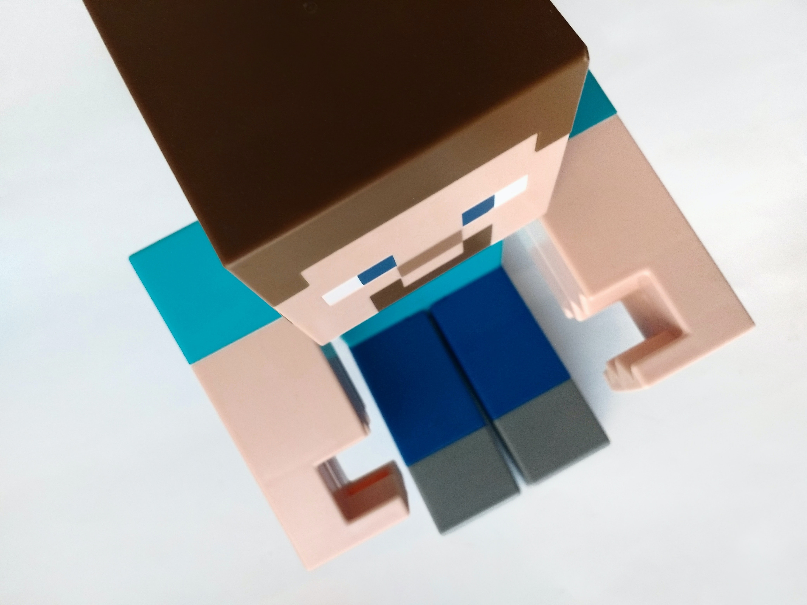

- Minecraft
MINECRAFT

마인크래프트는 2011년 정식 발매된 Mojang 스튜디오의 샌드박스 형식 비디오 게임으로, 이름처럼 채광(mine)과 제작(craft)을 하는 게임으로 흔히 알려져 있다.
모든 것이 네모난 블록으로 이루어진 세계에서 혼자, 혹은 여럿이 생존하면서 건축, 사냥, 농사, 채집, PvP, 회로 설계, 또는 직접 게임을 제작하는 등 정해진 목표 없이 자유롭게 즐길 수 있다.
2020년 기준 모든 플랫폼에서 2억 장 이상 판매된 역대 가장 많이 팔린 비디오 게임이며, 2020년 5월 기준 활동하는 평균 사용자 수가 1억 2,600만 명을 돌파할 정도로 전 세계 최고의 인기 게임 중 하나이다.
MINING
마인크래프트에는 수많은 광물이 있다. 1.16.5 기준으로 돌,석탄,철,금,레드스톤,청금석,다이아몬드,에메랄드가 있다. 이 광물들은 오로지 곡괭이로 채광이 가능하며 광물들의 단단한 정도에 따라 채광이 될수도, 안될수도 있다. 예를들어 철광석이
단단함 2이고,나무곡괭이가 단단함 1이면 나무곡괭이로는 철광석을 채굴할 수 없고, 금광석이 단단함 3이고, 다이아몬드 곡괭이가 단단함4라면 다이아몬드 곡괭이로는 금공석을 채굴할 수 있다.
BUILD
마인크래프트에 있는 수많은 건축블럭들은 당신의 실력에 따라 웅장한 건축물이 될수도 있고 삐둘어진 건축물이 될수도 있다. 또 창의성에 따라 누군가는 나무 한 종류만으로도 아름다운 신전을 만들수도 있고, 누군가는 그저그런
직육면체의 집을 지을수도 있다. 마인크래프트는 당신의 창의성과 실력에 따라 모든 건축물이 만들어진다. 당신이 정말 멋진 건축물을 만들고 싶다면 실력을 키워야 할것이다.